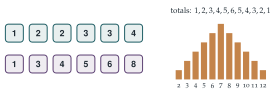

STEP I 1993, Question 1
Read the question before you go on. It is in the STEP Support Programme’s question database: step.maths.org/questions/93-s1-q1
The hook
Is there any other way to number two six-sided dice, with positive whole numbers, so that every total from \(2\) to \(12\) comes up exactly as often as with ordinary dice? In 1978 Martin Gardner announced in Scientific American that there is exactly one: a die numbered \(1, 2, 2, 3, 3, 4\) and a die numbered \(1, 3, 4, 5, 6, 8\). They had been discovered by Colonel George Sicherman, and are now sold as Sicherman dice. A game of Monopoly played with them would be indistinguishable from an ordinary one.
This question is a warm-up: deduce how two dice are numbered from the table of totals. The systematic way to do it, and the proof that Sicherman’s dice are the only strange pair, both come from turning each die into a polynomial.
Before you start
If the first die has \(p_i\) faces showing \(i\) and the second has \(q_j\) faces showing \(j\), how many ways are there to throw a total of \(t\)?
The number of ways is \(\sum_i p_iq_{t-i}\): choose the number \(i\) on the first die, then the second must show \(t - i\). For the first pair of dice, a total of \(6\) comes from \(1 + 5\) (in \(1 \times 1\) way), \(2 + 4\) (\(2 \times 1\)), \(3 + 3\) (\(2 \times 2\)), and nothing else, since the first die has no \(4\) or \(5\) and the second has no \(0\). That is \(1 + 2 + 4 = 7\) ways.■
Working it through
Stage 1 The extremes
Call the dice \(A\) and \(B\), and write \(a_i\), \(b_i\) for the number of faces of each showing \(i\).
There is no way to throw \(2\), nor \(12\). What does that say about the \(1\)s and the \(6\)s? There are two ways to throw \(3\). Which die has the \(1\)s?
No total of \(2\) means \(a_1b_1 = 0\): at most one die has any \(1\)s. A total of \(3\) can only be \(1 + 2\) or \(2 + 1\), and there are two ways, so some die does have a \(1\); call it \(A\), so \(b_1 = 0\). Then \[\text{total } 3: \quad a_1b_2 = 2, \qquad\text{so } (a_1, b_2) = (2, 1) \text{ or } (1, 2).\] Similarly, no total of \(12\) means \(a_6b_6 = 0\).
Stage 2 Working upwards
Write down the equation for a total of \(4\), remembering \(b_1 = 0\). What does it say in each of the two cases?
A total of \(4\) is \(1 + 3\) or \(2 + 2\) (and \(3 + 1\) is impossible as \(b_1 = 0\)), so \(a_1b_3 + a_2b_2 = 1\).
Case (a), \(a_1 = 2\), \(b_2 = 1\): \(2b_3 + a_2 = 1\), so \(b_3 = 0\) and \(a_2 = 1\).
Case (b), \(a_1 = 1\), \(b_2 = 2\): \(b_3 + 2a_2 = 1\), so \(a_2 = 0\) and \(b_3 = 1\).
Total \(5\): \(a_1b_4 + a_2b_3 + a_3b_2 = 1\).
Case (a): \(2b_4 + 0 + a_3 = 1\), so \(b_4 = 0\), \(a_3 = 1\). So far \(A\) has \(1, 1, 2, 3\) and \(B\) has \(2\); \(B\)’s other five faces are \(5\)s and \(6\)s.
Case (b): \(b_4 + 0 + 2a_3 = 1\), so \(a_3 = 0\), \(b_4 = 1\). So far \(A\) has \(1\) and \(B\) has \(2, 2, 3, 4\); \(A\)’s other five faces are from \(4, 5, 6\), and \(B\)’s other two from \(5, 6\).
Stage 3 Case (a) fails
In case (a), write down the equation for a total of \(7\), and use \(b_5 + b_6 = 5\).
Total \(7\): \(a_1b_6 + a_2b_5 + a_3b_4 + a_4b_3 + a_5b_2 = 2b_6 + b_5 + 0 + 0 + a_5 = 3\). With \(b_6 = 5 - b_5\) this says \(10 - b_5 + a_5 = 3\), so \(b_5 = 7 + a_5 \geq 7\). But \(B\) only has six faces. Case (a) is impossible.
Stage 4 Case (b) succeeds
In case (b), use the totals \(6\) and \(11\), and the fact that \(a_6b_6 = 0\).
Total \(6\): \(a_1b_5 + a_4b_2 = b_5 + 2a_4 = 4\) (the other products involve \(a_2 = a_3 = 0\) or \(b_1 = 0\)). Since \(b_5 \leq 2\) and \(b_5 = 4 - 2a_4\) is even, either \(b_5 = 0, a_4 = 2\) or \(b_5 = 2, a_4 = 1\).
If \(b_5 = 0\) then \(B\) is \(2, 2, 3, 4, 6, 6\), so \(a_6 = 0\) and \(A\) is \(1, 4, 4, 5, 5, 5\). But then total \(7\) has \(a_1b_6 + a_4b_3 + a_5b_2 = 2 + 2 + 6 = 10\) ways, not \(3\).
If \(b_5 = 2\) then \(B\) is \(2, 2, 3, 4, 5, 5\), with \(b_6 = 0\), and \(A\) is \(1, 4\) and four faces from \(5\) and \(6\). Total \(11\): \(a_6b_5 = 2a_6 = 6\), so \(a_6 = 3\) and \(a_5 = 1\).
The only possibility is \[A:\ 1, 4, 5, 6, 6, 6, \qquad B:\ 2, 2, 3, 4, 5, 5.\] Finally we must check that these dice give the whole table, since we have used only some of the totals. Multiplying out (or using the polynomials below) confirms every entry.■
Looking back
Start at the extremes. The smallest and largest totals involve only one or two products, so they give the strongest information.
Split into cases and kill them. Each total cut the possibilities down, until only one case survived.
Check sufficiency. The deduction showed what the dice must be; a final check showed that they work.
What’s really going on
Dice as polynomials
Write each die as a polynomial, with one term \(x^i\) for each face showing \(i\). An ordinary die is \(x + x^2 + x^3 + x^4 + x^5 + x^6\), and the dice in the question are \[A(x) = x + x^4 + x^5 + 3x^6, \qquad B(x) = 2x^2 + x^3 + x^4 + 2x^5.\] Multiplying, each pair of faces contributes \(x^ix^j = x^{i+j}\), so the coefficient of \(x^t\) in \(A(x)B(x)\) is the number of ways to throw a total of \(t\). This is the generating function idea of Section 9.4 once more: the table of totals is just the product \(A(x)B(x)\), and our case-by-case deduction was a way of factorising it.
Sicherman’s dice
For two ordinary dice the product is \((x + x^2 + \cdots + x^6)^2\). Any pair of dice with the same totals must have polynomials \(P(x)\), \(Q(x)\) with \(P(x)Q(x) = (x + \cdots + x^6)^2\). Now factorise: \[x + x^2 + \cdots + x^6 = x(1 + x)(1 + x + x^2)(1 - x + x^2),\] and these factors cannot be broken down further (into polynomials with integer coefficients). So each of \(P\) and \(Q\) must be built from the factors \(x\), \(1 + x\), \(1 + x + x^2\), \(1 - x + x^2\), each appearing twice in total. Three conditions narrow the choice:
each die has \(6\) faces, so \(P(1) = Q(1) = 6\); the factors take the values \(1\), \(2\), \(3\), \(1\) at \(x = 1\), so each die gets one \(1 + x\) and one \(1 + x + x^2\);
no face shows \(0\), so \(P(0) = Q(0) = 0\): each die gets one factor \(x\);
the only freedom left is how the two copies of \(1 - x + x^2\) are shared. One each gives ordinary dice. Both on one die gives \[\begin{aligned} x(1 + x)(1 + x + x^2) &= x + 2x^2 + 2x^3 + x^4, \\ x(1 + x)(1 + x + x^2)(1 - x + x^2)^2 &= x + x^3 + x^4 + x^5 + x^6 + x^8. \end{aligned}\]
These are Sicherman’s dice, \(1, 2, 2, 3, 3, 4\) and \(1, 3, 4, 5, 6, 8\) (Figure 9.6.1), and the argument proves they are the only alternative. The key fact is that polynomials, like integers, factorise uniquely into irreducibles: number theory and combinatorics meet.

In probability the same idea appears as the probability generating function: a random variable \(X\) taking values \(0, 1, 2, \ldots\) has \(\mathrm{G}(t) = \mathrm{E}(t^X) = \sum \mathrm{P}(X = k)t^k\), and for independent \(X\) and \(Y\), \(\mathrm{E}(t^{X+Y}) = \mathrm{E}(t^X)\mathrm{E}(t^Y)\). Sums of independent random variables correspond to products of generating functions. STEP III 2003 Q14 (in the exercises) finds Sicherman’s dice this way, and Section 9.13 uses a related argument to show that no loading of two dice can make all totals equally likely.
The thinking skill
When objects combine by adding their values, represent each one as a polynomial in \(x\). Combining becomes multiplying, and questions about the combinations become questions about factorisation.
Here a question about dice turned into the unique factorisation of polynomials. At university, such encodings are everywhere: in combinatorics, in probability, and in algebra, where polynomials are studied in their own right as a ring with arithmetic like that of the integers.
Try this next
Tetrahedral dice. Try STEP III 2003, Question 14, which asks Sicherman’s question for four-faced dice. (Hint: \(x + x^2 + x^3 + x^4 = x(1 + x)(1 + x^2)\).)
Checking the table. Multiply out \((x + x^4 + x^5 + 3x^6)(2x^2 + x^3 + x^4 + 2x^5)\) and check it against the table in the question.
Three dice. Are there three six-sided dice, not all standard, labelled with positive integers, whose totals have the same distribution as three standard dice? (Hint: the factors of \((x + \cdots + x^6)^3\) now include three copies of \(1 - x + x^2\).)
A coin and an octahedron. An eight-sided die labelled \(1, \ldots, 8\) and a two-sided “die” (a coin) labelled \(1, 2\): can they be relabelled differently with the same totals?
Further reading
Martin Gardner, Penrose Tiles to Trapdoor Ciphers (Mathematical Association of America). Includes the column on Sicherman dice.
Joseph Gallian & David Rusin, “Cyclotomic polynomials and nonstandard dice”, Discrete Mathematics 27 (1979). The general theory, for dice with any number of faces.
Herbert Wilf, generatingfunctionology (free online), Chapter 1.